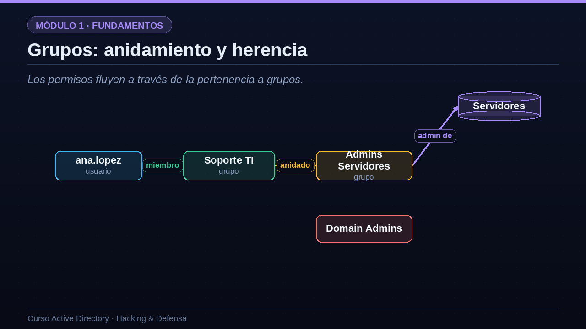
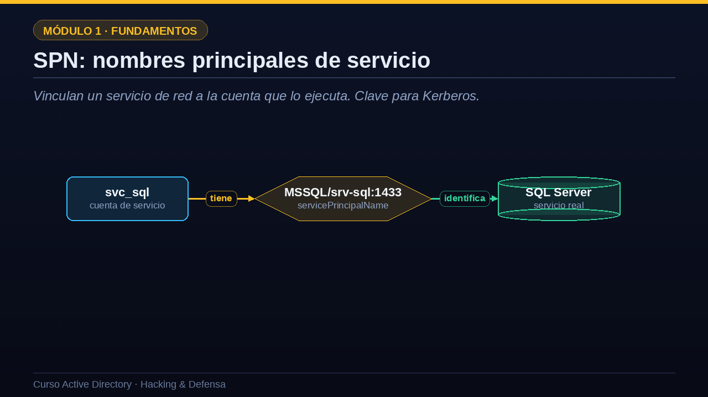
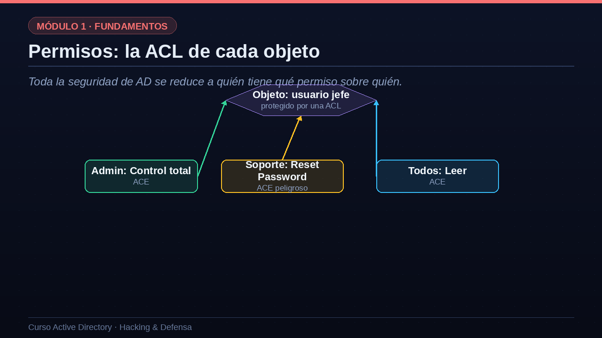

01Tipos de objeto y sus identificadores
Empecemos ordenando los objetos y sus identificadores. Un usuario se identifica por su nombre de cuenta, el sAMAccountName, como ana punto lopez. Un equipo es también una cuenta, y su nombre termina siempre en el símbolo del dólar. Un grupo se caracteriza por sus atributos member y memberOf, que indican quién lo compone y de qué grupos forma parte. Y una cuenta de servicio es un usuario especial que tiene definido un servicePrincipalName, un SPN. Ahora bien, por debajo del nombre, lo que Windows usa de verdad para identificar a cada objeto es su SID, el identificador de seguridad, una cadena larga que empieza por ese prefijo que ves en pantalla. El SID es único e inmutable; aunque renombres una cuenta, su SID no cambia. Los permisos se asignan al SID, no al nombre.
| Objeto | Atributo clave | Identificador único |
|---|---|---|
| Usuario | sAMAccountName | SID (S-1-5-...) |
| Equipo | nombre terminado en $ | SID propio |
| Grupo | member / memberOf | SID |
| Cuenta de servicio | servicePrincipalName | SID + SPN |
02Grupos: anidamiento y herencia
Los permisos fluyen a través de la pertenencia a grupos.
El concepto más potente, y más peligroso, de los grupos es el anidamiento. Un usuario pertenece a un grupo, pero un grupo puede, a su vez, pertenecer a otro grupo, y así sucesivamente. Y la pertenencia es transitiva: si Ana está en el grupo de soporte, y ese grupo está anidado dentro del grupo de administradores de servidores, entonces Ana es, efectivamente, administradora de servidores, aunque nadie la haya metido directamente ahí. Este encadenamiento es cómodo para administrar, pero crea caminos ocultos de privilegio que son muy difíciles de ver a simple vista. Un usuario aparentemente normal puede acabar, a través de tres o cuatro saltos de anidamiento, con permisos de administrador de dominio. Descubrir estos caminos es, precisamente, lo que hace BloodHound, la herramienta estrella del módulo de hacking.

03Grupos privilegiados que debes vigilar
Pertenecer a cualquiera de estos equivale, casi siempre, a controlar el dominio.
Hay un puñado de grupos que son las joyas de la corona, y debes conocerlos de memoria. Domain Admins otorga control total del dominio. Enterprise Admins va más allá: controla todo el bosque. Schema Admins puede modificar el esquema, un cambio con consecuencias en todo el bosque. El grupo de administradores local del propio controlador implica control de la máquina más crítica. Y hay dos que suelen infravalorarse pero son letales: Account Operators, que gestiona cuentas y puede crear o modificar usuarios; y Backup Operators, que puede leer cualquier fichero del controlador, incluida la base de datos NTDS punto dit con todos los hashes. Para un atacante, llegar a cualquiera de estos grupos es, casi siempre, haber ganado la partida. Para un defensor, vigilar quién pertenece a ellos es la primera prioridad.
| Grupo | Poder que otorga |
|---|---|
| Domain Admins | Administrador total del dominio |
| Enterprise Admins | Administrador de todo el bosque |
| Schema Admins | Puede modificar el esquema del bosque |
| Administrators (del DC) | Control del controlador de dominio |
| Account Operators | Gestiona cuentas: a menudo infravalorado |
| Backup Operators | Puede leer cualquier fichero: incluido NTDS.dit |
04SPN: nombres principales de servicio
Vinculan un servicio de red a la cuenta que lo ejecuta. Clave para Kerberos.
Detengámonos en los SPN, los nombres principales de servicio, porque son la base de uno de los ataques más comunes. Cuando un servicio de red, por ejemplo una base de datos SQL Server, se ejecuta bajo una cuenta de dominio, esa cuenta lleva asociado un SPN: una etiqueta como MSSQL barra srv guion sql, que identifica de forma única al servicio. ¿Para qué sirve? Para que Kerberos pueda emitir un ticket dirigido exactamente a ese servicio. Es decir: el SPN es el puente entre un servicio y la cuenta que lo ejecuta. El problema de seguridad, que veremos a fondo, es que cualquier usuario del dominio puede pedir un ticket para cualquier SPN, y ese ticket viene cifrado con el hash de la contraseña de la cuenta de servicio. Eso permite el Kerberoasting: pedir el ticket y crackear la contraseña offline. Por eso enumerar los SPN es una de las primeras cosas que hace un atacante.

05Permisos: la ACL de cada objeto
Toda la seguridad de AD se reduce a quién tiene qué permiso sobre quién.
Y llegamos al concepto que gobierna toda la seguridad de Active Directory: las listas de control de acceso, las ACL. Cada objeto del directorio, cada usuario, grupo o equipo, lleva adjunta una ACL, que es una lista de reglas. Cada regla se llama ACE, una entrada de control de acceso, y dice: este SID tiene este permiso sobre este objeto. Por ejemplo, el administrador tiene control total sobre la cuenta del jefe; el grupo de soporte tiene permiso para resetear su contraseña; y todo el mundo puede leerla. Fíjate en ese permiso de reset de contraseña: parece inofensivo, pero significa que el grupo de soporte puede cambiar la contraseña del jefe y suplantarlo. La escalada de privilegios en AD consiste, casi siempre, en encontrar una ACE mal configurada como esta y abusar de ella.

06Permisos (ACE) que un atacante busca
Derechos aparentemente menores que permiten tomar el control de una cuenta.
Veamos los permisos concretos que un atacante sueña con encontrar. GenericAll es el máximo: control total sobre el objeto. GenericWrite permite modificar atributos; por ejemplo, añadir un SPN a una cuenta para luego kerberoastearla. WriteDacl es especialmente insidioso, porque permite reescribir los propios permisos del objeto, así que un atacante con WriteDacl puede concederse a sí mismo control total. ForceChangePassword permite resetear la contraseña de una cuenta sin conocer la anterior, suplantando directamente a su dueño. Y permisos como AddSelf o WriteMember permiten añadirse a un grupo privilegiado. Ninguno de estos derechos suena tan grave como decir administrador de dominio, y por eso se cuelan en las auditorías. Pero encadenados forman caminos que llevan, paso a paso, hasta el control total. Memoriza esta tabla: la volverás a ver en el módulo de BloodHound.
| Permiso (ACE) | Qué permite hacer |
|---|---|
| GenericAll | Control total sobre el objeto |
| GenericWrite | Modificar atributos (p. ej. añadir un SPN) |
| WriteDacl | Reescribir los permisos del objeto |
| ForceChangePassword | Resetear la contraseña sin conocer la antigua |
| AddSelf / WriteMember | Añadirse a un grupo privilegiado |
07Cuentas de servicio: riesgo y solución
Las cuentas de servicio merecen una mención especial, porque son un punto débil recurrente. El problema clásico es doble. Por un lado, suelen tener contraseñas que un humano eligió hace años, débiles y que nunca caducan ni se rotan, lo que las hace perfectas para el Kerberoasting. Por otro lado, por pura comodidad, muchas acaban metidas en Domain Admins cuando no lo necesitan. La solución moderna que ofrece Microsoft son las cuentas de servicio administradas por grupo, las gMSA: el propio sistema genera y rota automáticamente una contraseña de más de cien caracteres, imposible de crackear. Combinadas con el principio de mínimos privilegios, es decir, dar a cada servicio solo los permisos que realmente necesita, las gMSA cierran una de las puertas de entrada más habituales de los atacantes.
El problema clásico
- Contraseñas débiles y eternasCuentas de servicio con claves que no caducan ni se rotan.
- Privilegios excesivosA menudo acaban en Domain Admins por comodidad.
La solución moderna
- gMSACuentas gestionadas: contraseña larga y rotada por el sistema.
- Mínimos privilegiosSolo los permisos que el servicio necesita de verdad.
08Resumen de la lección
Recapitulemos esta lección, que cierra el módulo de fundamentos. Hemos visto los objetos del directorio y el SID como su identificador real, al que se asignan los permisos. Hemos entendido que los grupos anidados crean caminos de privilegio transitivos y ocultos. Conocemos los grupos privilegiados que hay que vigilar y los SPN que habilitan el Kerberoasting. Y, sobre todo, hemos comprendido las ACL y las ACE, el quién puede qué sobre quién, que son el núcleo de casi toda escalada de privilegios en Active Directory. Con esto tienes ya una base sólida. En el siguiente módulo entraremos en la administración empresarial, empezando por una pieza central del día a día: las directivas de grupo, las GPO. Nos vemos en la lección cinco.
- Objetos y SIDUsuarios, equipos, grupos y cuentas de servicio; los permisos se asignan al SID.
- Grupos anidadosLa pertenencia transitiva crea caminos ocultos hacia el privilegio.
- Grupos privilegiados y SPNDomain Admins y amigos; los SPN habilitan Kerberoasting.
- ACL y ACEQuién puede qué sobre quién: el núcleo de toda escalada en AD.